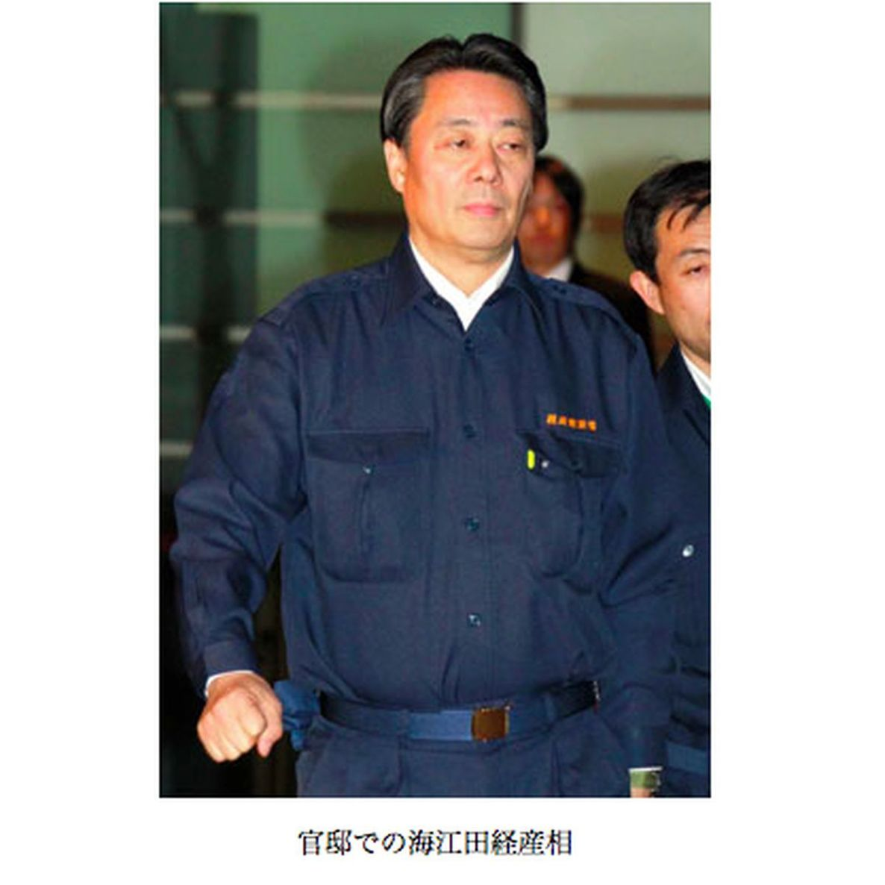
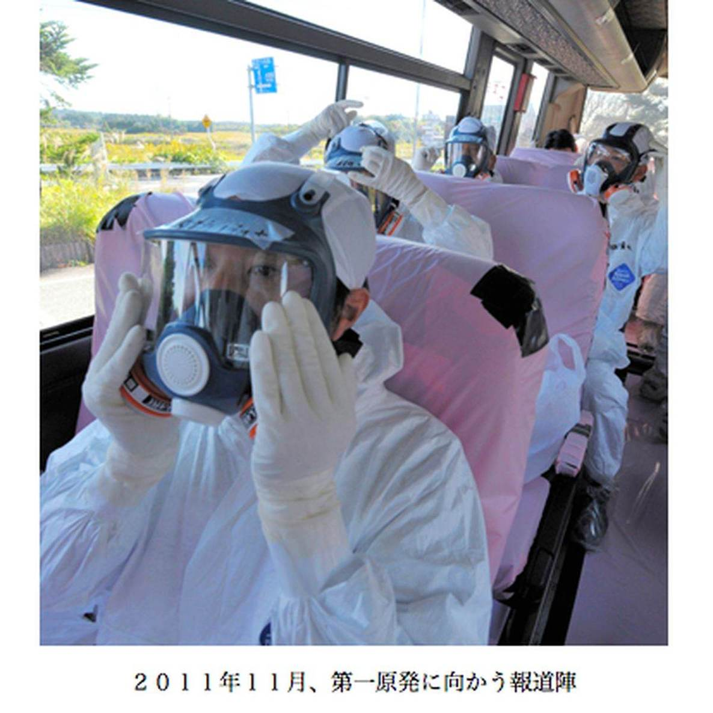

| プロメテウスの罠〔６〕 官邸の５日間「撤退なんてありえない」 (朝日新聞デジタルＳＥＬＥＣＴ) | |
| 朝日新聞 | |
| (2013) | |
官邸は放射能の拡散を予測する「ＳＰＥＥＤＩ」のデータを手にできず住民避難に生かせなかった。だが、米軍は早々と、電話１本でそれを取り寄せていた。第６シリーズ「官邸の５日間」は、３月１１日直後の官邸に焦点を合わせます。２０１２年１月３日から２月６日にかけて朝日新聞で連載した全３５本を収録。
内容紹介
官邸は放射能の拡散を予測する「ＳＰＥＥＤＩ」のデータを手にできず住民避難に生かせなかった。だが、米軍は早々と、電話１本でそれを取り寄せていた。第６シリーズ「官邸の５日間」は、３月１１日直後の官邸に焦点を合わせます。２０１２年１月３日から２月６日にかけて朝日新聞で連載した全３５本を収録。
初出
朝日新聞 二〇一二年一月三日～二月六日
第１章 米軍には伝えていた
第２章 誰からも答えがない
第３章 「武器が足りません」
第４章 残っていただきたい
第５章 まだやれますね
第６章 総理の判断を仰ごう
第７章 外国に侵略されるぞ
第８章 また怒られるんだよ
第９章 １８分間の会談
第１０章 皆さんは当事者です
第１１章 超スーパーマンなら
第１２章 手伝ってくれないか
第１３章 響き渡る「電源喪失」
第１４章 「制御できなくなる」
第１５章 「経済学部ですけど」
第１６章 急きょ発令した人事
第１７章 原発の図面すらない
第１８章 テレビと記憶が頼り
第１９章 「ベントが必要です」
第２０章 電源車を集めろ
第２１章 １号、ベントに入る
第２２章 なぜ、できないんだ
第２３章 爆発、ゼロではない
第２４章 「しっかり伝えて」
第２５章 「いいから早く！」
第２６章 決死隊つくってでも
第２７章 ベントはしたが
第２８章 爆発、「放送しよう」
第２９章 「あちゃあ」という顔
第３０章 無理をしてでも来て
第３１章 いや、ぼくは行くよ
第３２章 「炉へ海水注入せよ」
第３３章 次の手、提案がない
第３４章 竹竿でも突っ込んで
第３５章 過去、俺は語らない
震災から４日目、２０１１年３月１４日朝のことだ。
外務省北米局日米安全保障条約課の外務事務官、木戸大介ロベルト（３３）のところに横田基地の在日米軍司令部から電話が入った。
「原発事故の支援に際して放射能関連の情報が必要だ。政府が情報を有しているなら提供してほしい」
当時、外務省は昼夜１２時間の２交代で動いていた。木戸は朝９時に登庁し、仕事を始めたばかり。上司の許可を得て、経済産業省など思い当たる省庁に電話した。電話はあちこち回された末、文部科学省の防災環境対策室に行き着いた。
室長補佐の澄川雄（３３）は「防災関係者で活用する分には提供して構わない」と答えた。
木戸は担当者に「データを直接米軍に提供してほしい」と伝えたが、「震災後のどたばたで手が足りません」。木戸は「それなら私の方でリレーしましょう」と答えた。
午前１０時４０分、木戸のパソコンに原子力安全技術センターからメールが届く。文科省の委託を受け、放射性物質の拡散を予測する機関だ。木戸は添付されたファイル名に「ＳＰＥＥＤＩ」の文字を見つけた。
ＳＰＥＥＤＩ（スピーディ）？ 木戸は初めて聞く名称だった。
「名前も知らないし、なんのことか理解できませんでした」
木戸はメールを在日米軍司令部に転送した。
そのころ福島県では住民の避難が続いていた。気がかりは放射性物質の流れ方であり、それを予測するのが実はＳＰＥＥＤＩだった。
ＳＰＥＥＤＩはほぼ正確に予測を出していた。しかしその予測は、避難の資料としてまったく使われなかった。それは第２シリーズ「研究者の辞表」で検証した通りだ。どこが危険かも分からぬまま、多くの住民が遠くを目指した。
ＳＰＥＥＤＩが使われなかった理由は、そもそも存在自体が知られていなかったからだ。
１１年３月１４日の時点でＳＰＥＥＤＩを知る政治家はほとんどいなかった。首相の菅直人（６５）や官房長官の枝野幸男（４７）ですら認識していなかった。ＳＰＥＥＤＩ情報を官邸中枢に伝えるべき官僚が、それをしていなかったのだ。
官邸中枢が存在すら知らないＳＰＥＥＤＩのデータが、米軍にはいち早く渡っていた。１１年１２月、その事実を伝えると、菅の声のトーンが上がった。
「全然知らなかった。一番伝えなきゃいけないところに、なぜ伝えなかったんだ」
１時間ごとのＳＰＥＥＤＩのデータは木戸のパソコンへ届いた。地図の画像データだったため、情報量は多かった。パソコンに入るデータの量はメールの送受信に支障が出るほど膨らんだ。
木戸は自動転送と、転送後の自動削除にパソコンを設定した。データは１１年７月まで順調に米軍へ流れた。
最初のＳＰＥＥＤＩデータが木戸に届いて２０分ほど後のことだ。
官邸５階にある総理執務室で、菅は公明党代表の山口那津男（５９）と党首会談をしていた。
会談が始まって１０分ほどたったとき、執務室のドアがせわしくノックされた。
「テレビ、テレビ、４チャンネル、４チャンネル、爆発しています！」
テレビのスイッチが入れられた。福島第一原発の３号機が映し出されていた。
爆発の映像が繰り返し流れている。原子炉建屋がオレンジ色の閃光（せんこう）を放つ。煙が真上に高く噴き上がる。壊れた建屋のコンクリート片が落下する――。
福島中央テレビが第一原発の南南西約１７キロの山中に設置した監視カメラの映像だった。
菅がつぶやいた。
「煙、黒いよなあ」
３号機が爆発したのは、１１年３月１４日の午前１１時１分だった。
首相の菅直人（６５）は３号機から出る黒い煙が気になって仕方なかった。２日前に１号機が水素爆発を起こしたが、その時の白い煙とは明らかに違う。
党首会談を打ち切った菅は首相補佐官の寺田学（てらたまなぶ）（３５）と秘書官に命じた。「関係者を全員呼べ」
菅の口調は落ち着いていた。
爆発の約３０分後には、原子力災害対策本部の中枢メンバーが総理執務室に集まった。経産相の海江田万里（かいえだばんり）（６２）、官房長官の枝野幸男（ゆきお）（４７）、官房副長官の福山哲郎（てつろう）（４９）。
それに原子力安全・保安院付の安井正也、原子力安全委員長の班目（まだらめ）春樹（６３）が加わった。
「何が起きているんだ」
菅が皆に尋ねた。誰も答えない。
「一刻も早く情報を集めろ」
地下の危機管理センターに行く者、執務室の隣にある応接室に移った者。携帯電話を手に、情報収集を始める者もいた。
そのころ福島県内では１１年３月１２日に設定された半径２０キロの避難区域に残る人たちの救出が、ヘリやバスを使って続いていた。多くが、長期入院の患者や特別養護老人ホームに入所する老人たちだった。県外に避難する住民も多かった。
避難案づくりの切り札とされた文部科学省所管のＳＰＥＥＤＩは、放射性物質の拡散方向を震災初日から予測していた。
文科省や安全委には原子力安全技術センターから１時間ごとにデータが渡り、同じものが外務省を通じて在日米軍にも届けられていた。保安院も、独自に計算させたＳＰＥＥＤＩの予測図を次々とセンターから送らせていた。
ＳＰＥＥＤＩを使いながら、官僚たちは肝心の官邸にその存在自体を伝えなかった。
菅の前には保安院や安全委の幹部がいたにもかかわらず、ＳＰＥＥＤＩの利用を進言することはなかった。テレビの報道が先行する。官邸はその確認に追われる。情報は届かない――。
情報共有のため、応接室には２台のホワイトボードが用意されていた。が、そこに新しい情報が書き込まれることは少なかった。
官邸が情報収集に走り回っていたころ、隣の２号機に異変が生じていた。３号機の爆発の影響だった。官邸が知らないところで、最大の危機が進んでいた。
１１年３月１４日の３号機爆発は、２号機の弁を開ける電気回路を壊していた。このため、格納容器の圧力を下げる弁が閉じてしまった。
このままだと圧力が上がり続ける。建物ではなく原子炉そのものが耐えられなくなって、爆発する危険がある。そうなるとチェルノブイリ並みの事故だ。
官邸が２号機の異変に気づいたのは、１１年３月１４日の午後４時ごろだった。
総理執務室横の応接室には、原子炉の状態を示すファクスが次々と届けられていた。東京電力が作成、発信したデータだ。
執務室のファクス機に届くたび、応接室に運ばれた。机にはコピーされたファクスの紙が次第に積み上がっていった。
室内には原子力安全・保安院付の安井正也や原子力安全委員長の班目春樹（６３）がいた。経済産業相の海江田万里（６２）、官房副長官の福山哲郎（４９）、首相補佐官の寺田学（３５）もたびたび顔を見せた。
ファクスの中身は時間ごとの原子炉内の水位や圧力だった。２号機の水位は下がっていた。水位の低下は燃料棒を浸す水が少なくなっていることを意味している。
午後４時ごろ、誰かがぼそりと口に出した。
「燃料棒、露出してるんじゃないか？」
その懸念は現実になる。午後６時２２分、燃料棒全体が露出した。
原子炉内で「空だき」が始まった。そのままだと燃料棒が溶け落ちて、原子炉に次々と穴が開き、漏れ出してしまう。消防車は燃料切れで注水ができない。給油して、とにかく急いで水を入れないといけない。ところが......。
午後８時を過ぎて今度は、「圧力が高く、原子炉に水が入らない」という報告が届いた。
その報告を、菅直人（６５）は執務室で聞いた。携帯電話を取り、福島第一原発の所長、吉田昌郎（まさお）（５６）と直接話した。まだやれます、と吉田はいった。
「ただ、武器が足りません。炉内が高圧でも注水できるポンプがあれば......」
吉田のその訴えは、首相補佐官の細野豪志（ごうし）（４０）も直接聞いていた。
そのころ、東京電力の社長、清水正孝（まさたか）（６７）は携帯電話で海江田に連絡を取ろうとしていた。だが、なかなかつながらない。
何度も何度も清水は電話をかけ続けた。
東京電力社長の清水正孝（６７）が経済産業相の海江田万里（６２）に連絡を取ろうと携帯電話を握り締めていた時間帯は２度ある。
１度目の時間帯は１１年３月１４日午後７時からの約２時間。２号機の燃料棒が全部露出して圧力容器が「空だき」になった事態を、東京電力が経産省などに通報したころに当たる。
午後１０時５０分、２号機の原子炉格納容器内の圧力が設計上の限界を超えた。２度目の時間帯は、その後の日付が変わるころ。格納容器の圧力を逃す、最後の弁操作も失敗したころだった。
どちらの時間帯も、清水は海江田の秘書官に電話し続けた。携帯電話の発信ボタンを何度も何度も押し、数秒間隔でかける時間帯さえあった。そうまでしても海江田にはなかなかつながらなかった。
１度目にやっと電話がつながったときの清水の言葉を海江田はこう記憶している。
「第一原発の作業員を第二原発に退避させたい。なんとかなりませんか」。海江田は「残っていただきたい」と清水の求めを拒んだ。
その時刻は午後８時ごろとみられるが、関係者によって食い違う。
首相補佐官の寺田学（３５）はこんな光景を記憶している。
午後８時過ぎ。官邸５階の官房長官執務室に行くと、官房長官の枝野幸男（４７）が海江田と話していた。
海江田の秘書官が入ってきて「東電からお電話です」と告げた。海江田は「もういいよ、それは。断った話だから」と答えた。
「何の話ですか」。寺田が尋ねると、海江田は「東電が原発から撤退したいといってるんだ」。
寺田は驚いた。「大臣、そんな大事な電話ならちゃんと断った方がいいんじゃないですか」
海江田が電話に出た。相手は清水だった。海江田はいった。
「残っていただきたい」

枝野は、日付が１５日に変わるころ、自分にも同じ内容の電話が清水からあったと振り返る。枝野は「そんな簡単に『はい』といえる話じゃありません」といい、電話を切った。
官房副長官の福山哲郎（４９）は、東電が首相補佐官の細野豪志（４０）にも同じ様な電話をしてきた、という。細野は電話に出ること自体を断った。
発信の頻度を見ると、清水がいかに必死だったかが分かる。
１１年３月１４日午後８時９分、東電本店。記者を前に広報部部長の吉田薫（かおる）が「ご説明したい」とマイクを握った。
「福島第一原発２号機なんですが、炉の中の水がほとんどなくなったような状況になっています」
資料が報道陣に配布された後、午後８時４０分に副社長の武藤栄（むとうさかえ）（６１）の記者会見が始まった。
安全確保や放射性物質の拡散防止についての質問に、武藤は「将来についてあまり予断を持った考え方はできない」「将来のことですので」と明言を避け続けた。
午後１０時ごろ、官邸５階の廊下を経済産業事務次官の松永和夫が行き来していた。
首相補佐官の寺田学は、経産相の海江田万里が「松永次官も東電の撤退をいいに来ているんだよ」とつぶやいたのを覚えている。
午後１１時ごろ、米大使のジョン・ルース（５６）と官房長官の枝野幸男との電話会談があった。ルースがいった。
「米国の原子力専門家を官邸に常駐させてほしい」
日本の危機管理能力を米国は疑っている。国家主権に触れかねない要請だ。枝野は「なかなか難しい。検討したいが......」と丁重に断り、菅直人に報告した。
２号機の危機をめぐり、官邸ではやりとりが続いていた。
１１年３月１５日の午前０時を回ったころだった。官房長官執務室の椅子でうとうとしていた枝野を秘書官が声をかけて、起こした。
「海江田大臣がお呼びです」
枝野が総理応接室に行くと、海江田や官房副長官の福山哲郎、首相補佐官の細野豪志、寺田がいた。
「東電が撤退なんていってきて。とりあえず、そんなのあるかっていった」「そうだよね」
枝野は「大事なことだから官房長官も直接話して下さい」といわれて細野から携帯電話を渡された。相手は福島第一原発所長の吉田昌郎だった。
「大丈夫なんですね。まだやれますね」。枝野はそう尋ねた。吉田はいった。「やります。頑張ります」
電話を切った枝野はいった。
「本店の方は何を撤退だなんていってんだ。現場と意思疎通ができていないじゃないか」
だが、２号機の危機は一向に好転しない。格納容器の圧力を上部から抜く弁を開けようとしたがうまくいかなかった。応接室の雰囲気は次第に重くなっていった。
１１年３月１５日の未明になっていた。
経済産業相の海江田万里は東京電力からの「撤退」の申し出を拒否したものの、官邸ではその問題が再びくすぶり始めていた。
２号機の見通しは一向に立たない。
２号機は、原子炉内部の圧力を下げる弁が閉じたままだ。圧力が限界を超えればどうなるか。
爆発の危険は続いていた。
総理執務室横の応接室には、海江田や官房長官の枝野幸男、官房副長官の福山哲郎、首相補佐官の細野豪志、寺田学ら、原子力災害対策本部の主要メンバーがいた。
原子力安全・保安院付の安井正也と原子力安全委員長の班目春樹も控えていた。
室内の空気は重かった。後日、官邸側が秘書官や政治家から聞き取ったメモがある。
〈撤退についてはみんなどうしようという感じだった。というのも作業員のことが頭にあった。この時の認識ではまだメルトダウンしていないので、常に爆発が念頭にある。このまま線量が高くておかしくなったり、爆発が起こったらどうしようとか、皆が顔を見合わせている状況だった〉
福山は「このままでは撤退もやむをえないのではないか、そんな雰囲気が出始めていました」という。
その場の共通認識はこうだ。
住民の避難区域は１１年３月１２日に半径２０キロに広げていた。これだけ避難が進んでいれば、たとえ原子炉が爆発する事態になったとしても大量被曝（ひばく）の恐れは軽減されるのではないか。何よりも作業員の生命が危険にさらされている――。
「総理に判断を仰いだ方がいいのではないか」
福山が提案した。海江田や枝野ら、その場の全員が同意した。
菅直人は仮眠を取っていた。
執務室横にはもう一つ別の応接室があり、そこのソファで防災服のまま横になっていた。
震災以来、一度も公邸に帰っていない。その応接室のそばにはシャワールームがあるが、それも使っていなかった。
ノックの音で菅は目覚めた。秘書官の岡本健司が入ってきた。
「総理、海江田大臣がいらっしゃっています」
「ああ、いいよ」。菅はソファから身を起こした。
時刻は午前３時になろうとしていた。
１１年３月１５日午前３時、官邸。応接室のソファでの仮眠から起きた菅直人は、執務室に入った。
そこには経済産業相の海江田万里、官房長官の枝野幸男、官房副長官の福山哲郎、首相補佐官の細野豪志と寺田学が待っていた。
「東京電力が原発事故現場から撤退したいといっています」
菅は即座にいった。
「撤退したらどうなるか分かってんのか。そんなのあり得ないだろ」
何をバカなことをいっているんだといういい方だったと福山は語る。
午前３時２０分。菅は話し合いの場を隣の応接室に移した。壁には「蝉蛻（せんぜい）」の書。セミの抜け殻のことで、世俗を脱するという意味がある。
官房副長官の藤井裕久（ひろひさ）（７９）と滝野欣弥（きんや）（６４）、防災担当相の松本龍（りゅう）（６０）が加わった。後に「御前会議」と呼ばれる集まりだ。原子力安全・保安院長の寺坂信昭（５８）と保安院付の安井正也、原子力安全委員長の班目春樹、委員長代理の久木田豊（くきたゆたか）も出席した。
前日来、２号機の危機は続いていた。原子炉の圧力を下げる作業が試みられていたが、うまくいかない。焦点は圧力を逃がすパイプラインの弁だった。弁が開かないと炉内の圧力が高まり、悪くすると爆発する。
原子炉内の圧力は刻一刻と高くなっていた。
御前会議が始まった。安井が状況を説明し、枝野が「東電から『プラントは厳しい状況で、もうやるべきことはない。撤退したい』との話があった」と報告した。
このときも菅は間髪を入れなかった。
「撤退なんてあり得ない」
全員が「撤退すべきではない」との意見で固まった。「撤退を食い止めるためには東電に乗り込むしかない」というところに話は発展した。
急いで、東京電力社長の清水正孝を呼ぶことにした。
清水が来るまでの間、菅は話し合いの場を応接室から執務室に変えた。政治家だけを集めた。そして菅はいった。
「このままほっといて撤退したら東日本全体がダメになる」
「こんなんで逃げてどうする」
「こんなことでは外国から侵略されるぞ」
目の前に並ぶ一人一人に強い調子で詰め寄った。
「俺は東電に行くつもりだ。お前は行くか」「お前は行くか」「お前は行くか」......
首相の菅直人は、総理執務室で東京電力社長の清水正孝を待った。
２号機の爆発の危機は１１年３月１５日未明になっても続いていた。
原子炉が爆発したら、ほんとうに国が成り立たなくなってしまう。菅は「これはやばいな」と真剣に思ったという。
「三鷹のお袋の家も使えなくなっちゃうのかな、なんてことまで頭に浮かんだよ、あのときは」
東電は官邸に、４人の駐在を置いていた。その筆頭は東電フェローの武黒一郎（６５）だ。元原子力担当副社長で、技術名誉職である「フェロー」の肩書を持つ。
武黒は震災初日の１１年３月１１日から官邸に詰めていた。このときは総理執務室のある５階ではなく、階下の応接室だ。
重要な局面での会議に出席し、東電との橋渡しを務めると同時に、技術的な助言をしてきた。いわば官邸の危機対策での東電代表だ。
その武黒が、東電の撤退問題で官邸がばたばたしている最中に、姿が見えなくなった。
武黒は他の社員を残して官邸近くの仮泊のホテルに行き、シャワーを浴びた後、仮眠を取っていた。
連絡用の携帯電話を持ち、仮眠の間も枕元に置いていた。
だが、その携帯は一回も鳴らず、そのまま朝まで数時間眠ってしまった。
武黒は１１年３月１４日、爆発の危機にあった２号機問題に取り組んでいた。午後７時ごろ、炉心の減圧になんとか成功した。午後７時５４分から消防車を使って冷却用の海水を注入できるようになり、一安心した。それで、日付が１５日に変わってから、仮泊先のホテルに行き、しばしの休息を取ることにしたのだ。
その後、格納容器の圧力が上がり、爆発の危機が近づきつつあった。だが、武黒はそのことを東電本店から知らされなかった。
清水の車は官邸に向かっていた。
官房副長官の福山哲郎と首相補佐官の寺田学は執務室を出た。ふたりは声をひそめて言葉を交わした。
福山「社長が撤退するとかいい出したら、大変なことになるぞ」
寺田「内々に、清水社長に総理の意向を伝えておきますか」
清水には国会担当と広報担当の幹部２人が同行していた。車中、清水は２人につぶやいた。
「ごめんな、ごめんな」「どうせまた怒られるんだよなあ」「お前よお、悪いなあ」
東京電力社長の清水正孝が官邸に着いたのは１１年３月１５日午前４時１７分だった。
５階で首相補佐官の寺田学が出迎えた。寺田は結局、撤退拒否の菅直人の意向を清水に伝えなかった。
清水は同行の社員２人と分かれ、ひとりで菅の待つ応接室に入った。
菅は「ご苦労様です。お越し下さり、すみません」とあいさつし、いきなり結論を告げた。
「撤退などあり得ませんから」
官房長官の枝野幸男、経済産業相の海江田万里、官房副長官の福山哲郎と滝野欣弥、藤井裕久、首相補佐官の細野豪志らが同席していた。一同が清水の言葉を待ち構えた。
「はい、分かりました」
両手をひざに置いた清水が、小さく頭を下げた。
清水の返事を聞いた海江田は、「ん？」と思ったと振り返る。「あれだけ撤退を強くいっていたのに」
さらに菅はたたみかけた。
「細野君を東電に常駐させたい。ついては机と部屋を用意して下さい。東電に統合本部をつくるから。お互いの情報を共有しよう」
清水は驚いた表情を見せたが、「分かりました」と答えた。
これで「事故対策統合本部」が設立された。政治が民間企業に乗り込み直接指揮する超法規的組織だ。
何時に東電に行けばいいか、菅が清水に尋ねた。清水は、２時間程度かかる旨を返答した。
「そんなんじゃ遅いです。１時間後にうかがうので、部屋、用意して下さい」
了承した清水に、「じゃあ、どうぞ。用件は終わりました。準備して下さい」。１８分間の会談だった。
菅の東電行きが決まり、首相秘書官が大声を上げた。
「東電に行くらしい」「官邸の記者クラブに通告しろ」......
その大声を聞いた東電広報部課長の長谷川和弘（４８）は、一緒に清水に同行した国会担当の東電社員が携帯電話で電力総連関係の民主党議員に電話しているのも見た。
「先生、何とかなりませんか」
何ともならなかった。
執務室に戻った菅は、ひとり机に向かった。常に傍らに置いているＡ５判の「菅ノート」に、事故対策統合本部の人事案が書き込まれた。
〈本部長 菅 副本部長 海江田 清水 事務局長 細野......〉
午前５時２８分。菅は東電本店に向かった。海江田、福山、細野、寺田が続いた。
１１年３月１５日午前５時３５分、菅直人を乗せた黒塗りの車が東京・内幸町の東京電力本店に着いた。
菅は、東電２階の対策本部に入った。その後、ここが政府・東電の事故対策統合本部になる。
壁面に、現場とのテレビ会議に使う複数のモニターがかかっていた。菅の正面に会長の勝俣恒久（つねひさ）（７１）、その横に社長の清水正孝が座った。
菅はこう訓示した。少し長いが、秘書官メモから採録する。
――今回の事の重大性は皆さんが一番分かっていると思う。政府と東電がリアルタイムで対策を打つ必要がある。私が本部長、海江田大臣と清水社長が副本部長ということになった。これは２号機だけの話ではない。２号機を放棄すれば、１号機、３号機、４号機から６号機、さらには福島第二のサイト、これらはどうなってしまうのか。
これらを放棄した場合、何カ月か後にはすべての原発、核廃棄物が崩壊して放射能を発することになる。チェルノブイリの２倍から３倍のものが１０基、２０基と合わさる。
日本の国が成立しなくなる。何としても、命がけで、この状況を抑え込まない限りは。撤退して黙って見過ごすことはできない。そんなことをすれば、外国が「自分たちがやる」といい出しかねない。
皆さんは当事者です。命を賭けて下さい。逃げても逃げ切れない。情報伝達が遅いし、不正確だ。しかも間違っている。皆さん、萎縮しないでくれ。必要な情報を上げてくれ。目の前のことと共に、５時間先、１０時間先、１日先、１週間先を読み、行動することが大事だ。
金がいくらかかっても構わない。東電がやるしかない。日本がつぶれるかもしれないときに、撤退はあり得ない。会長、社長も覚悟を決めてくれ。６０歳以上が現地に行けばいい。自分はその覚悟でやる。
撤退はあり得ない。撤退したら、東電は必ずつぶれる――
「菅訓示」が終わって間もない午前６時、皮肉にも２号機の圧力抑制室付近で大きな衝撃音が発生した。
その３時間後、正門付近で毎時１万１９３０マイクロシーベルトが確認された。これまでとは桁違いの高い線量だった。
海側への風は、次第に陸側へと変わり、その後、北西に向きを定めた。その先には浪江町（なみえまち）、飯舘村（いいたてむら）、福島市があった。
１１年３月１５日午前６時ごろ、２号機の圧力抑制室の圧力が、衝撃音とともにゼロになった。原子炉に穴が開き、高濃度の放射能を含む蒸気が外に出たことを意味していた。
菅直人は東京電力２階にいた。一部を残して作業員の一時退避を命じる。６５０人が南に約１０キロの福島第二原発に逃れた。
東電社長の清水正孝が前日夜から官邸に要請していた「撤退」が、結果的に一部実現した形だ。
ちなみに清水が求めた「撤退」について、東電は現在「作業に直接関係のない一部の社員を一時的に退避させることがいずれ必要となるため検討したい」だったと主張する。だが、清水の話を聞いた官邸の人間のうち、確認できた５人全員が清水はそうは言わなかったと話す。肝心の清水は取材に応じていない。
１１年３月１５日朝の東電に戻る。
清水は菅に、住民の避難区域を３０キロに広げたい旨を口にした、と官邸側が作成したメモには記載されている。東電は事態を深刻にとらえていた。１、３号機は水素爆発したが、それは格納容器外で起きた。原子炉自体が破損していたら、もれ出す放射能は甚大になる。
午前８時３０分から始まった記者会見で、頭を下げた東電幹部は「一線を越えたということか」と問われ、「事象の規模という意味では大きな出来事だ」と答えた。
午前８時４６分、菅は官邸に戻った。午前９時、第一原発の正門付近で毎時１万１９３０マイクロシーベルトという高い放射線量が確認される。
このときＳＰＥＥＤＩ予測に基づいて住民を避難させていれば、余分な被曝（ひばく）をせずにすんだはずだ。原子力安全・保安院や原子力安全委員会は、なぜ官邸中枢にＳＰＥＥＤＩの存在を伝えなかったのか。
安全委員長の班目春樹はいう。
「原発のプラントが今後どうなるかを予測できる人間は、私しかいなかった。その私にＳＰＥＥＤＩのことも全部やれっていうんですか。超スーパーマンならできるかもしれませんけど。役割分担として菅首相にアドバイスするのは保安院です」
保安院長の寺坂信昭はいう。「保安院がＳＰＥＥＤＩの話をしちゃあいけないことはないが、ＳＰＥＥＤＩは、文部科学省の所管です」
有効な手が打たれないまま、事態は悪化の一途をたどる。
午後１時ごろ、菅は秘書官に命じ、横浜にある理化学研究所の研究拠点に電話した。
日本の基礎科学研究の最先端を行く理化学研究所の横浜研究所。
１１年３月１５日午後１時ごろ、研究推進部長の生川浩史（いくかわひろし）が自席の電話を取った。菅直人からだった。
生川は文部科学省の官僚。２００９年、菅が科学技術政策担当相（副総理兼務）だったときの秘書官を務めている。
「久しぶり。ところで君の専門は原子力だったよね」
「え？ 私はウチューですよ、宇宙工学」
「......とにかく大変なことになっているんだ。手伝ってくれないか」
タクシーで来た生川を菅は執務室に招き入れた。間もなく菅の母校・東京工業大学原子炉工学研究所の有冨正憲（ありとみまさのり）（６４）や斉藤正樹も着いた。菅の依頼を受けた東工大学長の伊賀（いが）健一（７１）から協力を要請された。
菅は、個人ルートで呼び寄せた科学者たちに、こういった。
「正しい情報がタイムリーに入ってこないんです。水素爆発だって、原子力安全委員会の班目さんは『起きない』と言っていた。なのに爆発は起きてしまった。保安院や原子力安全委以外にも、色々な意見を加味して判断したい」
２号機の危機が収まらないのに、今度は４号機の使用済み燃料プールの温度上昇という問題が加わっていた。
「統合本部に行って、気づいた点があれば教えてください」
菅の要請を受けて、有冨らは夕刻、この日東電に設置されたばかりの統合本部に入った。
翌日から、有冨らは専門的な対応策を菅に助言し続けた。生川は菅が退陣するまでの約半年間、統合本部に詰め、作業状況などを携帯で即座に菅にメールした。
１１年３月１５日は、菅の個人的な人脈が機能し、動き始めた日だ。この日、菅は統合本部の事務局長に首相補佐官の細野豪志を任命した。細かい対応を細野に任せ、指示があれば細野を通じて発した。
菅は津波被害への対応は官房長官の枝野幸男らに託し、原発災害にかかりきりになった。にもかかわらず、事態は菅が打つ手の先を走っていく。爆発、放射能の拡散......。危機は次々にあふれ出し、広がった。
最高責任者は首相であり、菅には一切の責任を背負う責務がある。だが、根底には官僚組織の機能不全が横たわっていた。
震災当日の１１年３月１１日に戻ってそれを見てみよう。
大震災が起きた１１年３月１１日午後２時４６分、菅直人は参院決算委員会に出席していた。
天井のシャンデリアが大きく揺れた。菅はいすのひじかけを両手でつかみ、天井を見上げた。
「身の安全を確保するようにお願いします」「机の下にお隠れ下さい」――。決算委員長の鶴保庸介（つるほようすけ）（４４）は休憩を宣言した。
菅はＳＰに守られながら、官邸地下の危機管理センターに向かった。
官房副長官の福山哲郎は、その様子を官邸５階の秘書官室のモニターで見た。すぐ秘書官に命じた。
「内閣危機管理監に、緊急参集チームを集めるように指示を！」
内閣危機管理監は元警視総監の伊藤哲朗（てつろう）（６３）だ。センターに官邸対策室を設置し、初動対応に関する情報集約や調整を担う。各省庁の局長級でつくる緊急参集チームの要だ。
福山がセンターに駆け込むと官房長官の枝野幸男も姿を現し、続いて菅が入ってきた。関係省庁の局長らはすでに到着していた。
センターには机が長円形に並び、中央に菅が陣取る。そのわきに枝野ら内閣の中枢メンバー、内閣危機管理監の伊藤。取り囲むように各省の災害担当の責任者が構えた。
それぞれの机には各部局の専用の電話が置かれ、地震の被害状況が刻々と伝えられる。それを各省庁の幹部がマイクで復唱した。声が響き渡った。
「火災発生。火災の規模は分からず！」
「道路の被害状況を報告します」
「先ほどの地震のマグニチュードを変更！」......
後ろに控えた各省庁職員がその声をメモに取る。メモは直ちにコピーされ、菅らに配られた。
「福島第一原発、緊急停止しました」
「福島第二原発も緊急停止です」
原発は自動停止した。
だが、午後３時２７分。津波の第１波が東北の町々を襲う。そして、その８分後には第２波が続いた。
センターの壁に１０台ほどの巨大なテレビモニターがかかっている。やがて、そこに津波にのみ込まれた町の様子が映し出されることになる。
午後３時４０分前後、福島の原発で異変が生じた。まもなく、異変を告げるアナウンスが響いた。
「福島第一原発、全交流電源喪失しました！」
この一言で菅は「これは大変なことになる」と思った。
津波に襲われた東京電力福島第一原発は、午後３時３７分からわずか４分の間に、次々と全交流電源が使えなくなってしまった。
それは、原子炉を冷やすための装置を動かせないことを意味する。
その事態が継続すると、炉は空だき状態になり、溶け落ちた核燃料棒が炉に穴を開けて、外に漏れ出してしまう。
全交流電源喪失。それは日本で初めて起こる非常事態だった。
その時、福島第一原発の現場は大混乱していた。
所内連絡用のＰＨＳも通じない。代わりに使ったトランシーバーも雑音で使い物にならなかった。原発の中央制御室と免震重要棟にある現場の対策本部を結ぶ連絡線は、たった１本の電話回線だけとなった。
所長の吉田昌郎がいた現場の対策本部では、原子炉の状況がほとんど把握できなくなっていた。
協力会社の作業員はすでに大津波警報とともに退避している。
残った作業員は少なく、東電社員が復旧作業を担った。だが作業員の退避で、必要な資材の保管場所も分からなかった。
吉田は地震発生直後から東電本店に増員を要請した。
経済産業相の海江田万里は、午後３時４２分にあった全交流電源喪失という連絡を経産省で受けた。
その約１時間後、さらに深刻な事態となった。今度は１号機と２号機で、炉心を冷却することができなくなったと報告されたのである。
菅にもその知らせが届いたが、手元に詳しい情報はない。
午後４時５４分から首相の記者会見が開かれた。
菅はたいした説明ができなかった。
「一部の原子力発電所が自動停止いたしましたが、これまでのところ外部への放射性物質等の影響は確認をされておりません」と述べるだけだった。
経産省から官邸に駆けつけた海江田は、記者会見を終えた菅のいる５階の総理執務室に行った。原子力安全・保安院の寺坂信昭もいた。
そのときの菅への報告が「菅ノート」に残されている。
〈（非常用の）ディーゼル発電が止まっている〉
「原発がコントロールできなくなる」。メモを取りながら菅はそう思った。そして、原発事故としては最悪のメルトダウンのことが頭をよぎった。
「福島第一原発が全交流電源を喪失し、冷却できない状態です」
首相の菅直人は１１年３月１１日夕、総理執務室で、経済産業相の海江田万里と原子力安全・保安院長の寺坂信昭からそう報告を受けた。
寺坂の証言によると、時刻は午後５時から午後６時の間だった。
海江田は法律に基づく原子力緊急事態宣言を発令するよう、菅に上申するために来た。
菅は状況を寺坂にただした。次のようなやりとりを首相補佐官の寺田学が記憶している。
「電源が全部だめになったっていうけど、本当に全部なのか」
「全部だめです」
「予備バッテリーあるはずだろ」
「予備バッテリーも全部です」
「何で全部だめになるんだ」
「全部海水につかっています」
「海水につかっていたら、海水から出して何とか使えないのか」
「いえ、できません」
「何でできないんだ」
「一度塩水につかるとだめです」
「本当に全部だめなのか。ほかに何にもないのか」
「全部だめです」
菅は寺坂に同じ質問を繰り返した。だが、どう対処すればいいかの具体的な答えがない。菅は尋ねた。
「技術のことを分かってるのか」
東京大学経済学部卒の寺坂はこう答えたと本人はいう。
「私は経済学部ですけど」
続けて「しかし基本的なことは分かっているつもりです」。
このときのやりとりを記録した秘書官の聞き取りメモにはこうある。
〈総理より「お前は技術屋か？」と指摘され「技術を知っている奴（やつ）を呼べ」ということで、以後、総理に面会している記憶は乏（とぼ）しい〉
寺坂は振り返る。「完璧に原子炉をやってきた人間ではないので正直にそう申し上げました。分からない状態を伝えるしかなかった」
２００９年７月から保安院長になった寺坂の前職は、経産省の商務流通審議官だ。原発の危機管理を担う保安院のトップは事務系と技術系がほぼ交互に就いていた。
寺坂は午後７時３分に発足の原子力災害対策本部の事務局長だ。危機対応の要である。
１１年３月１５日未明の東電が撤退するかどうかの話し合いの場には、寺坂がいたという官邸側の記録はある。だが、１１日を過ぎてから、菅の記憶には出てこない。事務局長はどこに行ってしまったのか。
原子力安全・保安院長の寺坂信昭は１１年３月１１日夕、首相の菅直人から「技術を分かっているのか」と総理執務室でただされた後、地下の危機管理センターに下りた。
午後７時３分。原子力緊急事態宣言が発令される。原子力災害対策本部が設置され、本部長は菅、事務局長は寺坂になった。
寺坂の証言だと、「宣言」発令に伴って午後７時４５分に開かれた官房長官会見に同席。しばらくして官邸を離れた。
戻った先は、官邸から７６０メートル離れた霞が関の保安院だった。
代わりに官邸で、菅らに対応したのが、保安院次長の平岡英治だ。保安院勤務は長いが、卒業した東京大学では電気工学科だった。
寺坂は交代の理由を「原子力災害対策本部の事務局は保安院ですから。次長が官邸に詰めると保安院が空になるので私が戻りました」。
ところが、その平岡も１１年３月１３日の昼ごろには菅の元からいなくなる。代わって１３日から官邸に入り、技術的な助言をした保安院幹部は、安井正也（５３）だった。京都大大学院で原子核工学を専攻した専門家だ。
だが、保安院の職員ではなく、資源エネルギー庁の部長だった。
保安院もエネ庁も、ともに経産省の外局。寺坂は「総理に物足りなく思われている感じが伝わってきた」。エネ庁に掛け合い、１１年３月１２日付で保安院付の併任人事を発令して急きょ官邸に送り込んだものだった。
結局、保安院にはそれまで、官邸中枢に専門的な説明ができる人材がいなかったことになる。
寺坂はいう。「保安院がしっかり説明できればベストだが、情報が取れていない状況でどう判断していくのか。結果的に説明ができていないという批判はうけたまわります」
安井は取材に応じていない。
１１年３月１１日夜の官邸――。
地下の危機管理センターには、時間を追うごとに明らかになる津波被害の深刻さが伝えられた。
そこに原発の危機が加わった。
原子力緊急事態宣言を受け、菅は官房長官の枝野幸男にいった。
「官房長官は全体を見てくれ。俺は原発の状況から目が離せない」
菅は秘書官に「どこか集中して話ができる場所はないか」と尋ねる。秘書官は「あそこの部屋なら使えます」といい、センターが見渡せる中２階の小部屋を提案した。
しかしこの小部屋は問題が大ありだった。
首相の菅直人を中心にした原発事故対応チームが１１年３月１１日夜に入った小部屋は、「中２階」と呼ばれる部屋だった。
官邸地下の危機管理センターの中２階で、センターを一望できる。だが１０人も入ればいっぱいだ。
ここが原発事故の情報収集と判断をする司令部になった。
菅、官房長官の枝野幸男、経済産業相の海江田万里ら官邸中枢メンバーが頻繁に出入りし、原発情報が届けられた。
東京電力側からフェローの武黒一郎も詰めた。
しかし、電話が２本しかなかった。ファクスもない。さらに、携帯電話が通じなかった。センターはすべて圏外だった。
福島第一原発の情報が東電本店から即時に入らない。原子力安全・保安院からの情報も断片的だ。武黒は本店に連絡要員の増員と専用のファクスの設置を要求するが、設置は翌々日の１１年３月１３日だった。
部屋にテレビが１台あった。武黒はそのテレビ放送から原発事故の情報を得るしかなかった。
午後８時２６分。官房副長官の福山哲郎はこの中２階で、保安院側から報告を受けた。
保安院長の寺坂信昭か、次長の平岡英治からだったと福山は記憶する。「仮定の話」として説明された。福山のメモにはこうある。
〈（冷却機能停止から）２４時間後には放射能漏れ。その１時間前には（住民の）避難を〉
福山もこの時点では原発の知識はほとんどない。「原子炉の爆発の可能性はどうなのか」と尋ねた。
「ゼロではありません」
「そのとき放射性物質は飛散するのか」と聞いた。「あり得ます」
当を得ない問答が続いた。
午後９時ごろ、内閣府の原子力安全委員会から委員長の班目春樹が官邸に来た。海江田から「委員長の口からきちんとした説明がほしい」といわれたという。
班目は中２階に入ってびっくりした。肝心の原発の図面がないのだ。班目は「原発の図面を持っているのは保安院だ。保安院は何をやっているんだ」と思った。安全委員会は設置許可申請書しか持っていない。原発のどこがどうなっているのか。
班目はとにかく記憶を呼び戻そうとした。福島第一原発には何度も行っている。武黒もいた。班目は武黒と話し合いながら、現場の状況を懸命に思い出そうとした。
１１年３月１１日午後９時ごろ、官邸地下の中２階に入った原子力安全委員長の班目春樹は、東京電力フェローの武黒一郎とやりとりしながら、懸命に現場を思い出そうとした。
原発を冷却する水を入れるための電源が失われている。事態は一向に改善しない。
「えっと、あそこには非常用のディーゼルが二つ地下に並んでいたよなあ。あそこには、１号、２号、３号、４号と共通のディーゼルを１台増設してるはずだよな......。あれはどうだったっけ？」
携帯電話は圏外。有線電話は２本しかなく、独占できない。携帯電話で安全委員会に連絡するにはセンターの外に出ないといけない。情報はテレビと記憶が頼りだった。
次第に班目が怒鳴り声を上げるようになっていく。
「どうして情報が来ないんだ」
「保安院の方の情報はいったいどうなっているんだ」
班目は今でも保安院の対応を激しく批判している。
「保安院の平岡次長もおられたが、次長の専門は電気です。保安院の事務局は当然、次長を専門的にサポートすべきだった。どんどん情報の伝令を飛ばすべきだった。それがまったく来なかった。私からいわせれば、あのとき保安院は『消えていた』ということです」
情報から切り離された状態の中で、班目は「ベントをし、消防車で原子炉に注水するしかないだろう」という結論に達する。「武黒さんとも意見が一致した」という。
ベントとは、炉内の圧力を下げるために原子炉内の蒸気をパイプラインを使って外に逃す作業だ。圧力が高ければ、注水で冷やすことも爆発の危険を取り除くこともできない。
その際は当然、外部に放射性物質が飛散する。広い範囲で住民が被曝（ひばく）する可能性が出てくる。住民の避難も考えておかなければならない。
その場にいた経済産業相の海江田万里のいらいらもつのった。海江田はついに声を張り上げた。
「携帯つながんないじゃどうしようもないじゃないか。どうやって情報を集めるんだ」
国の危機管理の中枢が頼りにする専門家が、初期の段階、テレビと記憶を頼りに対策を模索していた。
首相の菅直人ら原発対応の中枢メンバーは、不便なこの中２階を嫌い、５階の総理執務室を使うようになる。こうして司令部は次第に５階に拠点を移していった。
「ベント」の言葉が話し合いの場で専門家から政治家に伝えられたのは、１１日午後９時ごろだった。
原子力安全・保安院次長の平岡英治は、５階の総理執務室に呼ばれた。経済産業相の海江田万里、首相補佐官の細野豪志がいた。
原子力安全委員長の班目春樹、東京電力フェローの武黒一郎と原子力品質・安全部長の川俣晋（かわまたすすむ）（５５）が参加したのも覚えている。
官房長官の枝野幸男が会議を仕切った。平岡の記憶だと、その場でこんなやりとりが交わされた。
「原子力緊急事態宣言を発したが、今後、住民の避難をどう考えたらいいか議論をしたい」
枝野はまず武黒に「プラントはどういう状況ですか」と尋ねた。
武黒自身も十分な情報を持ち合わせていない。詳しい説明はできなかった。「情報収集に最大限努力しています」
次いで班目に「このままだとどうなるのですか」。
班目は「もし原子炉に水が入らない状態が続くのであれば、燃料棒が露出して、炉心損傷に至ることが考えられます」。
班目、平岡、武黒の３者は、原子炉を冷やす水を入れるポンプを動かす電源の確保と、炉内にたまる熱を海に逃がすための別のポンプの復旧が必要だという意見で一致した。
「それがうまくいかなかったときはどうなるのですか」
「ベントが必要になります」
その場合、蒸気とともに放射能が飛散し、住民が被曝（ひばく）する恐れがある。どのくらいの範囲で住民を避難させる必要があるか。
安全委員会の指針では、防災対策を重点的に実施すべき範囲を１０キロ圏内としている。だが、班目は国際原子力機関文書が示す予防的措置範囲という考え方を引き合いに出した。その範囲は３～５キロだ。
班目は「３キロで十分」との見解を枝野らに示した。
平岡は、保安院を中心に毎年実施する避難訓練のシナリオが頭に浮かんだ。「半径２～３キロを避難区域にして、風下方向に５～８キロを屋内退避区域にする」というものだった。
結局、午後９時２３分、風向きとか地形などは考慮されず、原発から半径３キロの避難と３～１０キロ圏内の屋内退避が指示された。まずはベント実施を見越した予防的避難だった。
そのころ首相の菅直人は、電源車という特殊な車の手配状況に気をもんでいた。
福島第一原発から半径３キロの住民の避難が発表された１１年３月１１日午後９時２３分。この時間になっても電源車を使った復旧の見通しがつかなかった。
原子炉内部は水蒸気で高圧になっている。そこにポンプで水を注入するには、強力な動力がいる。
第一原発所長の吉田昌郎は「電源車があれば冷却機能は復活します」と東京電力を通じて官邸に伝えていた。高圧ポンプを動かすため電源車が必要だった。
官房副長官の福山哲郎と首相補佐官の寺田学は、電源車を運ぶため、高速道路を先導する警察車両の手配などに追われていた。
福山は地下の中２階の小部屋と５階の総理執務室を行き来して情報を集め、寺田は執務室に詰め切りとなった。電源車の状況は、首相の菅直人にも逐一報告された。
「菅ノート」に電源車の手配状況が刻々と記録されていった。何台か見つかった。
〈東京電力２０台 高圧〉〈柏崎 電池手配 取りはずし １日かかる〉〈那須 ３台〉......
約８トンの大型電源車を自衛隊のヘリで空輸することが検討された。
菅は防衛省から出向した秘書官に尋ねた。
「飛ばせるか？」。電源車の仕様を伝えた。「どうだ？」。「重量オーバーで運べません」。米軍にも依頼したが無理だった。
メルトダウンへの危機感が官邸中に広がっていた。
その日夜、「福山ノート」には原子力安全・保安院か東電が、官邸で説明した内容が記載されている。
〈冷却用の緊急ディーゼル発電機が必要だが、津波でその系統が動かない。（原子炉内の）温度が上がると、１０時間でメルトダウンを起こすという極めて深刻な状況だ〉
午後１１時までに、東北電力の電源車が福島第一原発に到着した。自衛隊の３台も着いた。だが、中２階にいた福山は知らなかった。一方、到着を聞いた寺田は、首相秘書官と「やったあ！」と歓声を上げた。
しかし、福島の現場では、電源車から原発に電気を送るためのケーブルの敷設作業が難航していた。余震のたびに中断したためだ。通信がほとんど使えず、原発の対策本部とのやりとりにも時間がかかった。
午後１０時４４分、中２階の菅のもとに、保安院から２号機の予測が届いた。「２時間後にはメルトダウンとなりそうだ」......。官邸の目が２号機に向いた。
日付が１１年３月１２日に変わった午前０時１５分、首相の菅直人は米大統領バラク・オバマ（５０）と電話会談をした。
オバマ「大変な一日、恐ろしい時間を過ごしていると思います」
菅「ありがとうございます。励ましの言葉、心にしみます」
この会談の直前、１号機の格納容器の圧力が異常に高くなる可能性が出てきた。
原子力安全・保安院がメルトダウンの危険を予測した２号機ではなく、１号機だった。
第一原発所長の吉田昌郎は１号機のベントの準備をするよう、指示を出した。午前０時６分だった。
菅はオバマとの会談を終えると官邸地下の中２階に入った。
ベントをすると、高圧の蒸気とともに放射性物質が放出される。住民の避難が必要になるため、官邸でも議論になった。
「１号機の炉心は溶けていない。ベントしてもそれほど大量の放射性物質は外に出ないだろう」
午前０時５７分からの話し合いで示されたその見解が、官房副長官の福山哲郎の「福山ノート」にある。根拠は、燃料棒の上１メートルまでまだ水があるということだった。福山は保安院次長の平岡英治と原子力安全委員長の班目春樹が示したと記憶する。
そのため、この時点で住民の避難区域を拡大することは検討から除外された。
〈１号 ベントに入る〉
菅ら出席者のベント実施の合意が福山ノートにそう記録された。その場には官房長官の枝野幸男と経済産業相の海江田万里、東京電力フェローの武黒一郎もいた。武黒は「準備に２時間程度かかる」と説明した。
午前３時ごろをめどにベントを実施する。そう決まった。
菅はいったん５階の総理執務室に戻り、海江田は記者会見をすることになった。
中２階を出た枝野は、福山に話しかけられた。
福山は「そんな時間に放射性物質が放出されれば、福島を含め、日本中がパニックを起こすかもしれません。かといって、日が明けてからの発表というわけにはいきません。ベントを隠蔽（いんぺい）したといわれます」。
「こちらでも、会見、やろう」
枝野はそういった。
ベントの予定時刻になった。午前３時６分、経産省で海江田と東電常務の小森明生（こもりあきお）（５９）の２人が記者会見を始めた。枝野はそれを確認し、会見場に向かった。
原子炉の爆発を防ぐために水蒸気を放出するベント。日本の原発事故史上初の事態だ。
官房長官の枝野幸男は１１年３月１２日午前３時１２分、官邸で記者会見した。
「原子炉格納容器の健全性を確保するため、内部の圧力を放出する措置を講ずる必要があるとの判断に至ったとの報告を、東京電力より受けました。安全を確保する上でやむを得ない措置であります」......
その６分前の３時６分、経済産業省では、経産相の海江田万里と東電常務の小森明生が同内容の記者会見を始めていた。
記者から「即座にやるのか」と質問された小森は、こう答えた。
「はい。今でもゴーすればできる状況です」
ベントをすれば爆発の危機は何とか回避できる。後は電源車が届いて、冷却機能が復活すれば――。
その考えは首相の菅直人ら原発事故対応組の共通認識だった。
電源車の手配が一段落すると、菅は、すでに福島第一原発の現地視察の検討を指示していた。裸足にサンダル履きの首相補佐官、寺田学がスケジュールをつくりはじめた。
午前３時５９分のことだ。長野県北部を震源とするマグニチュード６・７の地震が発生する。官房副長官の福山哲郎は、中２階から下の危機管理センターに急いだ。
「この地震は東北の地震と関係する地震なんですか、それともまったく違う地震なんですか」
福山が気象庁幹部に大声で尋ねた。その切迫した声がスピーカーを通してセンター全体に響き渡った。
原発事故に対応していた福山はひとまず仕事をおき、長野の地震の実態把握に追われた。混乱が続いた。
この時点で死者がいなかったことが確認されたため、再び原発事故に戻った。
福山が中２階に戻ると、原子力安全・保安院次長の平岡英治、原子力安全委員長の班目春樹、東電フェローの武黒一郎がいた。
「ベント、できました？」
まだだった。福山は怒鳴った。
「何でできてないんですか。３時ごろにやるっていったのは皆さんじゃないですか！」
「官房長官が記者会見でそういってるのに、国民にうそをいったことになるじゃないですか！」
「ベントしないと爆発するんじゃないの？ 大丈夫なんですか！」
菅はベントが実施されていないことをまだ知らなかった。
「どうしてまだベントができていないんですか！」
１１年３月１２日の午前４時半近く、官邸地下の中２階で、官房副長官の福山哲郎が大声でただした。
「ベントには手動と電動がある。電動は停電で使えません。手動をいま懸命に急がせています」
その場には、原子力安全・保安院次長の平岡英治、原子力安全委員長の班目春樹、東京電力フェローの武黒一郎がいた。
その一人が「いま線量が上がっているんです」といった。
つまり、ベントを実施しなければならない１号機周辺の放射線量が高くなって、作業員が近づけないということだ。
福山は中２階を飛び出し、官房長官の枝野幸男がいる５階に急いだ。首相補佐官の細野豪志が一緒だった。午前４時３０分のことだ。
「ベントができていません！」
福山が枝野にそう告げると、枝野の顔が曇った。福山は、再び地下の中２階に戻った。
そのとき首相の菅直人は、福島第一原発の視察に備え、着替えを済ませたところだった。
午前５時ごろ、菅は５階の総理執務室から地下の危機管理センターに下りた。首相補佐官の寺田学や秘書官の岡本健司が一緒だった。
姿を現した菅に福山が駆けより、歩きながら小声で告げた。
「総理、ベントがまだ始まっていません」
視察のスケジュール作りに追われていた寺田と岡本はベントのことを知らなかった。「ベントって何？」「えっ、ベントをするの？」
菅は「う、うん......」とうなったが、そのまま一同を引き連れて中２階に入った。菅はいった。
「ベントができていないと、どういう事態になるのか。爆発の危険性はないのか」
班目は爆発の可能性を否定しなかった。
「ゼロではないです」
このままでは爆発の危険性がある。午前５時４４分、菅は班目の助言を受けて住民の避難区域を３キロから１０キロに広げた。
そのころ原発付近の住民は、行き先も告げられぬまま、自家用車やバスで逃げまどっていた。
「とにかく西へ」
「とにかく遠くへ」
道路は渋滞になった。行き着いた避難所は満員。またその先へ。住民は右往左往した。
１１年３月１２日午前５時４４分、福島第一原発から半径１０キロが避難区域に指定された。半径３キロから広がった。
対象となる住民の人数が格段に多くなる。大熊（おおくま）、双葉（ふたば）、富岡（とみおか）、浪江（なみえ）の４町で、５万人規模だ。
官邸地下の危機管理センターにある幹部会議室。そこに詰めていた内閣危機管理監の伊藤哲朗のところにも、避難区域拡大の決定が届いた。伊藤を中心に、住民をどう避難させるかが話し合われた。
すぐに避難区域内の住民数と世帯数が調べられた。入院中の患者や介護の必要な人たちは何人か。その人たちを圏外に運び出すための車両はどうやって手配するか、受け入れ先の施設はどう確保するのか――。
警察庁や消防庁、厚生労働省から次々と報告が上がってきた。
幹部会議室には、原子力災害対策本部の事務局を担う原子力安全・保安院の幹部もいた。
伊藤はいった。「避難区域が拡大されたので、しっかりと県や市町村にも伝えてくれよ」
伊藤は重ねて「しっかり頼むぞ」と念を押した。
原子力災害が発生した場合、避難などの勧告や指示を市町村に連絡する役割を担うのが、原発のある大熊町に置かれた国の現地対策本部だ。
現地本部には福島県副知事の内堀雅雄も駆けつけた。７班を編成して対応した。震災の影響で通信手段は限られ、衛星電話が３台しか使えなかった。ここも混乱していた。
保安院原子力防災課長の松岡建志によると、午前６時２０分ごろ現地本部が大熊、双葉に避難区域拡大の連絡をした。現地本部がまとめた記録にはそうあるという。
その記録では、富岡、浪江と初めて連絡がついたのは午前７時４８分。記録では避難状況を確認した、となっている。
浪江町役場では避難区域の拡大をテレビの報道で知ったのが実情だった。そして、避難を決めた。防災無線で呼びかけたり、バスの手配をしたりで、役場も町民も混乱した。
避難指示を出した首相の菅直人は福島第一原発の視察に向かう。出発前、記者団に「現地の責任者と話をして状況を把握したい」と述べた。
自衛隊のヘリ「スーパーピューマ」に乗り込み、午前６時１４分に官邸屋上を飛び立った。同行は、原子力安全委員長の班目春樹、首相補佐官の寺田学、記者や医務官、秘書官ら１２人。約１時間後、菅は原発の現場に到着した。
１１年３月１２日午前７時１２分、首相の菅直人を乗せた自衛隊のヘリが東京電力福島第一原発に到着した。
官邸の防災服にスニーカー姿の菅はそのままマイクロバスに乗った。菅ら視察に来た１２人のほか、出迎えた東電副社長の武藤栄（むとうさかえ）（６１）、経済産業副大臣の池田元久（もとひさ）（７１）が乗り込む。池田は現地対策本部長だ。
菅は運転席の後ろにある右窓側の席に座った。隣に武藤が座ると、菅は激しく詰めよった。
「何でベントができないんだ！」
「早くやれ！」
「いいから早くやれ！」
菅の四つ後ろの席にいた首相補佐官の寺田学が驚くほどの声だった。武藤が何か答えた。
寺田は「ごにょごにょごにょごにょ、としか聞こえませんでした」。
菅も、そのときの武藤の返答を「ごにょごにょ、だった」という。
マイクロバスの後部には、官邸記者クラブの代表取材で同行していた共同通信記者の津村一史がいた。寺田は困った顔を見せた。
「怒鳴ってんの、書かないでくれよなあ」
とにかく、このときの菅は憤りを隠さなかった。本人も否定しない。
「ベントをしなければ国が危ないというときに、当事者の東電が煮え切らないことをいっている。そりゃ怒鳴り声にもなるよ」
１１年３月１１日以来、菅が感情をむき出しにした数少ない場面だった。しかしこのときのイメージが「怒鳴り散らす菅」の印象を増幅させた。
声が大きくなったのは菅だけではない。官邸の中２階に残った経産相の海江田万里もヒートアップしていた。東電フェローの武黒一郎への言葉に怒気がこもった。
「どうしてベントができないんだ！」「命令するぞ！」「命令するぞ！」「命令するぞ！」......
菅がまだ上空にいる午前６時５０分、海江田は原子炉等規制法に基づき、１号機と２号機でのベントを実施するよう求める命令を出した。
なぜベントができないのか。その理由が官邸に上がらない。このままでは原子炉が爆発してしまう――。
菅らのマイクロバスが現場の対策本部がある免震重要棟に着いた。一行は、なぜか放射線量を測る作業員の列に並ばされてしまう。
列は進まない。菅がおかしいことに気がついた。「こんなことやってる暇はないだろ！」と叫んだ。列から外れ、２階の会議室に向かった。菅は息をのんだ。
福島第一原発を訪れた菅直人ら一行は１１年３月１２日午前７時２０分ごろ、免震重要棟に入った。一歩入って菅は息をのんだ。
廊下は人をかき分けないと進めないほど作業員であふれている。中には上半身をはだけて死んだように寝ている男もいた。
２階に続く階段にも、一段一段の両脇に汗だくの男たちが立ち並び、階段の壁を背にして目をつぶっている。男たちは放心したような表情だった。
男たちをかき分け、一行は２階に上がっていった。菅は「野戦病院のようだ」と思った。
案内された部屋に入ったらどうしたわけか誰もいない。共同通信記者の津村一史も中に入った。それに気づいた菅は「記者は関係ないだろ」といい、追い出した。
そこに体格のいい福島第一原発所長の吉田昌郎が入ってきた。菅は初めて吉田と会った。
東電副社長の武藤栄が吉田の横についた。机には第一原発のプラントの地図が広げられ、２人は菅に現状を説明した。
武藤はいった。「ベントについては手動でやるかどうかを１時間後までには決めたい。予定している電動でのベントは実施までに４時間くらいかかります」
手動だと、放射線量が高い現場に人が入り、人の手で原子炉内の蒸気を逃がすパイプラインの弁を開けなければならない。
菅は「そんなに待てない、早くやってくれ！」。強い口調だった。
このやりとりに、首相補佐官の寺田学は「東電はなんて悠長に構えているんだ」といらいらしたのを覚えている。
寺田は医務官から「線量も高いので、長くいるのは避けた方がいい」といわれた。それを伝えようにも、菅の勢いに割り込めなかった。
しかし、吉田の説明は明快だった。
「ベントはやります。決死隊をつくってでもやります」
菅はそのとき「この男とは話ができる」と思ったという。
手動でのベントに向けて吉田たちが動き出した。
話し合いが終わり、会議室を出た寺田に、同行していた経済産業副大臣の池田元久が、寺田の背をたたいて「総理を落ち着かせてくれよ」といった。
寺田は「いつもよりましですよ」といってかわした。
首相の菅直人が福島第一原発にいた１１年３月１２日朝、第二原発でも原子炉の圧力を制御できなくなり、午前７時４５分に緊急事態宣言が発令された。
それを受け、第二原発も半径３キロが避難区域に、半径３～１０キロが屋内退避区域に指定された。
事態の悪化は全方位に広がる様相となった。
第一原発ではベントに向けた準備が進められ、午前８時２９分、東京電力は原子力安全・保安院に「午前９時ごろから１号機でベント操作を実施予定」と報告した。
福島第一原発を発ち、被災地の宮城県を上空から視察した菅は午前９時１９分、官邸へと帰路に就く。
その直前の午前９時４分、１号機でベントの作業が始まった。
日本で初めて、意図的に放射性物質を放出する事態だ。
パイプラインの弁を手動で開けなければならない。被曝（ひばく）量を軽減するため２人１組の３班体制を組んだ。耐火服を着て、懐中電灯を用意した。通信手段はない。暗闇、高い放射線量......。
１班の２人は予定通り、弁を２５％開けて中央制御室に戻ってきた。
だが、２班目が現場に向かう途中のことだった。
線量計が警報音を発した。９０ミリシーベルト超を告げる音だ。２班は引き返した。３班目は現場に行くこと自体を断念した。
東電社長の清水正孝は出張先の関西方面から午前１０時ごろ、本店に戻った。地震発生時、夫人同伴で奈良の平城宮跡を見学していた、と毎日新聞は報じている。
清水が本店に到着したころ、現場では中央制御室から遠隔操作で弁を開ける作業が試みられていた。
ベント操作の一人は被曝量が１００ミリシーベルトを超えた。
午前１０時４７分、第一原発の視察を終えた菅が官邸に戻った。
菅や経済産業相の海江田万里ら原発事故対策の中枢メンバーは、携帯もつながらない地下の中２階に見切りをつけ、この日午後から５階の総理執務室とその隣の応接室を司令部として本格的に使いはじめる。
午後２時３０分、東電は原子炉内の圧力が低下していることを確認した。このことから１号機でベントが成功したと判断した。
それが官邸にも報告された。中枢メンバーが５階に集まり始めた。菅は午後３時から始まった与野党党首会談に出ていた。そのとき１号機が爆発した。
１１年３月１２日午後３時３６分、１号機が爆発した。それに気づいたのは、地元福島のテレビ局、福島中央テレビだった。
郡山市の本社。１階の報道フロアにいたチーフカメラマンの箭内太（やないふとし）（４５）は、何げなく収録デッキのモニター画面に目をやった。白い煙が見えた。
「なんだ、この煙は」
写しているのは、福島第一原発の南南西約１７キロの山中に設置されている無人カメラだ。２４時間監視できるようにしてある。
箭内はすぐ、その映像をブルーレイディスクに落とした。隣の編集室に持って行き、同僚のカメラマンと一緒に見た。
映像を拡大した。建屋が爆発していた。
近くの放送フロアに報道制作局長の佐藤崇（５５）がいた。箭内は佐藤の腕の袖を引っ張り、編集室に連れて行って映像を再生した。
「爆発は原子炉の中か、外か？」
佐藤は何度も尋ねた。放射能の拡散が心配された。煙の元は原子炉建屋のようだった。
箭内は「早く映像を流しましょう。建屋が爆発したのは事実だ。映像が事実です。事実は放送しましょう」。心臓がどきどきしていた。
佐藤は決断した。「よし、放送しよう。映像で危機を伝えられる。判断するのは視聴者だ」
２人とも福島の人間だ。画面を見ながら、家族や友人の顔が浮かんできた。「テレビを見てくれ。早く避難してくれ」。心の中で祈った。
午後３時４０分、放映中の全国放送に割って入って、爆発の映像を流した。防災用の白いヘルメットをかぶったアナウンサーの大橋聡子（さとこ）がカメラに向かう。論評や解説は一切なし。７分余りの間、大橋は見たままを言葉にし続けた。
「先ほど福島第一原発から大きな煙が出ました。北に向かって流れているのが分かるでしょうか」......
爆発から４分間で下した判断だった。住民はその映像を見て避難した。佐藤と箭内は今、あのとき決断してよかったと確信している。
そのころ首相の菅直人は、午後３時から官邸で始まった与野党党首会談の真っ最中だった。
「原発から煙が出ているようだ」
官邸でもそんな情報が流れ始めた。確認に追われた。保安院や東電に問い合わせたが、確答はなかった。東京ではその映像はテレビで流れていなかった。
首相の菅直人が与野党党首会談を終えたのは１号機が爆発した２７分後の１１年３月１２日午後４時３分。東京電力会長の勝俣恒久が北京から本店に帰ったころだ。勝俣は１１年３月３０日の記者会見で、マスコミＯＢと一緒の訪中だったことを認めて「東電が（旅費を）多めに出した」と語った。
１号機の異変の知らせは菅にも伝えられたが、白煙が上がっているということだけが報告された。
午後４時４９分、日本テレビが全国放送で爆発の映像を流した。福島中央テレビから日テレ系列で全国放送された。
首相補佐官の寺田学はその映像を秘書官室で見て、すぐに隣の総理執務室に駆け込んだ。
テレビをつけたのか、チャンネルを変えたのかよく覚えていないが、とにかく声を張り上げた。
「総理、これを見て下さい」
執務室には官房副長官の福山哲郎と原子力安全委員長の班目春樹（まだらめはるき）もいた。寺田は班目が「あちゃあ」という顔をしたのが印象に残っている。
寺田は「総理がカッとして班目さんにガツンとやらなければいいが」と思った。班目は「水素爆発はありません」と断言していたからだ。
その断言は、震災初日の１１年３月１１日夜ごろだと記憶している。
官邸５階の執務室でプラントの図面を広げ、菅は班目に「水素爆発はないのか」と何度も尋ねた。「ありません」と班目はいっていた。
班目は「水素爆発のことは頭になかった。起きてみれば解説はできるが」と振り返る。
しかし班目は菅にガツンとやられなかった。菅はいう。
「予測できなかった人にそれ以上いっても仕方ないだろ」
とにかく、テレビを見た菅は、改めて情報を集めるよう指示した。
福島中央テレビが地元枠で爆発の映像を流してから１時間９分後だった。福島中央テレビは日テレに全国放送するよう何度も要請していた。
なぜ流れなかったのか。
日テレの広報担当副部長、小塩真奈（こしおまな）は説明する。
「福島中央テレビは速報性を重視した。日テレにもすぐに映像は届いていた。だが、何が起こっているのか、その分析がない中で映像を流すと、パニックが起こるのではないかと危惧した。映像を専門家に見てもらい、解説を付けて放送した」
ちなみに日テレは、１１年３月１４日の３号機爆発の映像を福島中央テレビの数分後に全国放送した。
１１年３月１２日午後に１号機で起きた水素爆発について、首相の菅直人が手に入れることができた情報は、日本テレビで午後４時４９分に放送された福島中央テレビ撮影の映像だけだった。
官邸には「白煙が上がっている」という報告がきただけで、原子力安全・保安院も、原子力安全委員会も東京電力も、菅のところにテレビ以上の情報は伝えていない。
菅がテレビで爆発を知るその二十数分前、東京電力は福島第一原発で放射線量が毎時１０１５マイクロシーベルトを計測したと保安院側に通報した。
なぜ線量が上がったのか、何が起こっているのか。白煙は爆発によるものなのか。そもそも爆発は本当にあったのか――。
官邸は情報収集に追われるが、具体的な情報は集まらない。
菅は午後５時の少し前、秘書官に命じて、石川県能美市にある北陸先端科学技術大学院大学の副学長、日比野靖（６６）に電話を入れさせた。
日比野は埼玉県入間市の自宅にいた。菅とは東京工業大学の同窓だ。大学の改革を訴えた学生運動をともに担った。後に菅内閣の内閣官房参与になる。
電話に出た日比野に、秘書官は菅の意向を懸命に伝えた。
「総理が、無理でもいいから来てくれないか、といっています」
日比野には、その日の昼ごろと午後３時ごろにも同様の電話があった。だが、そのときは断っている。
前日、東京都文京区の中央大学理工学部であったセミナーに参加している際に地震にあう。
一晩をそこで明かして帰宅した。ほとんど寝ていなかった。「疲れているので勘弁してほしい」と伝えていた。
だが秘書官は、この日３度目の電話では引き下がらなかった。
「総理は、無理をしてでも来てほしいといっています。無理を承知のお願いだそうです」
日比野は１号機爆発の事態をニュースで知っていた。原発事故のことで菅が呼んでいるのだろうと察しはついた。
日比野の専門はコンピューター技術。原子力は専門外だ。
しかし菅の切迫した要請に、結局、日比野は折れる。「自分が行ってもそんなに役には立てないだろう」と思ったが、とにかく行くことにした。
夕食を取った後、タクシーで官邸に向かった。
１１年３月１２日夕、菅直人の大学時代の友人で技術者の日比野靖が官邸に来てくれることになった。
それを待つ間、菅は官邸５階の執務室で、官房長官の枝野幸男、官房副長官の福山哲郎と、１号機爆発の意味を協議していた。
テレビで爆発が報じられているにもかかわらず、官邸に爆発の内容の詳しい報告はいっさい届かない。
いらだちが、菅の声を次第に大きくした。
「東電や保安院から何も報告が上がってこないのはなぜなんだ」
「吉田所長が現場にいるじゃないか。どういう爆発か現場なら分かるんじゃないのか」
官房長官記者会見を開くかどうかが議論になった。
福山はいった。
「爆発の状況が分かりません。説明しようがありません。会見を遅らせますか」
枝野は答えた。
「いや、ぼくは行くよ。テレビで爆発の映像が流れているのに、会見まで遅らせたら国民の不安が大きくなる。会見はしますよ」
やりとりを聞いた菅はしばらく考え込んでいたが、やがて「うん、やってもらおう」といった。
午後５時３９分、すでに１０キロ圏の避難を指示している福島第一原発だけではなく、第一原発の南約１０キロにある福島第二原発でも避難区域が半径３キロから１０キロに拡大された。
枝野は午後６時前から、記者会見を始めた。
「福島第一原子力発電所においてですね、原子炉そのものであるということは今のところ確認されておりませんが、何らかの爆発的事象があったということが報告をされております」
枝野は爆発の詳しい状況が分からない中で、「爆発的事象」という言葉を使った。

記者からは原子炉本体が破損しているかどうか、再三問われた。
枝野は「分析を進めている」などと答えるにとどまった。
午後６時ごろ。原子力安全・保安院でも、審議官の中村幸一郎が１号機の爆発について記者会見した。
「（テレビの）映像を見る限りの情報しか、具体的な情報は得られていません」
爆発から２時間以上も経っていた。
午後６時２５分、避難区域が福島第一原発の半径２０キロに拡大した。
首相の菅直人や経済産業相の海江田万里らが海水注入の実施について話し合ったのは１１年３月１２日午後６時。だがそれまでにも官邸では早期の海水注入の実施が話題になっていた。
その日の午後早く、官邸地下の危機管理センターで内閣危機管理監の伊藤哲朗と原子力安全・保安院の幹部職員が海水注入を巡ってやりとりしているのを何人かが聞いている。
伊藤「冷却水注入といっても、普通の水じゃ量が足りないだろう。海水を注入できないのか」
保安院「炉に海水を入れたらいけません。炉が使えなくなります」
伊藤「その真水はどこからどれくらいを運べばいいんだ」
保安院「......」
１号機にはこの日早朝から消防車を使って、千リットル単位の真水を注入していた。真水は量に限界がある。原発は海の近くだ。大量の海水を入れて、とにかく原子炉を浸してしまおうというのが海水注入だ。
東京電力社長の清水正孝は午後２時５０分、海水注入の実施を了解した。その４分後、福島第一原発所長の吉田昌郎は、所長権限で海水注入を実施するよう指示を出した。
そのころ、官邸の海江田は「海水の注入をいつまでもやらないのなら命令を出す」と発言した。
午後３時半になって、やっと海水注入の準備が整う。
その直後、１号機が爆発した。海水注入の作業が止まった。
海江田は、原子炉等規制法に基づき１号機の原子炉を海水で満たす応急の措置を取るように命じた。同時に保安院に海水注入を命令する文書を準備するように指示した。
そして、午後６時――。総理執務室に、菅や海江田、官房副長官の福山哲郎、首相補佐官の細野豪志が集まった。
それに、原子力安全・保安院次長の平岡英治、原子力安全委員長の班目春樹、東電はフェローの武黒一郎、原子力品質・安全部長の川俣晋。
武黒は「爆発で機材が損傷を受けた。海水注入に１時間半から２時間かかります」といった。
その場では、海水に含まれた塩分によって炉が腐食する可能性や燃料棒が溶けて再臨界状態になる危険性などについて議論になった。
「準備に２時間ほどかかるなら、その間に再臨界があるかどうかも検討しておいてくれないか」
菅はその場にいた人間にそういい渡し、２０分ほどで散会とした。武黒が電話をかけた。
１１年３月１２日夕、海水注入を巡る官邸での会議が終わった。その後、東京電力フェローの武黒一郎は、福島第一原発所長の吉田昌郎に電話した。
――海水注入について、総理は再臨界を含めて懸念を示している。総理の理解を得ることが重要だ......。
吉田は「もう海水の注入を開始している」と報告した。それに対し、武黒は「官邸で検討中なので、海水注入は待ってほしい」と伝える。吉田から相談を受けた本店側も中断はやむを得ないという意見だった。
だが吉田は中断せず、そのまま注入を続けた――。
政府の事故調査・検証委員会の中間報告はその線で書かれている。
官邸では、東電内部でのそんなやりとりを知らなかった。
午後７時３５分、首相補佐官の細野豪志が総理執務室に入り、海水注入が可能になったことを報告した。
官房副長官の福山哲郎のノートにはこうある。
〈ポンプ動く〉〈管（パイプ）生きている〉
官邸側はこのときに初めて海水注入できるようになったと認識した。
以上が、後に「首相が海水注入を止めた」と野党から批判されることになる事件のいきさつだ。
菅は振り返る。
「注水を真水から海水に変えることと再臨界とは関係がない。武黒さんも技術者だから、そのことはわかっているはずだ」
「それなのに、どうして海水注入と再臨界が結びつけられて、注水を止めた止めないの話になったんだ」
細野は、海水注入の話のほか、１号機の爆発が格納容器の爆発ではなかったと報告した。
「爆発直後は線量が上がりましたが、午後４時１５分からは急速に落ちています。爆発は建屋で、格納容器ではありません」
ほっとした空気が流れた。
中枢メンバーの会議が再開された。菅は午後７時５５分、経済産業相の海江田万里に海水注入をするよう指示した。その後、海水注入開始が菅に報告されることになった。
ほどなくして菅が「無理をしてでも来てほしい」と頼んだ北陸先端科学技術大学院大学副学長の日比野靖が官邸に到着し、執務室に来た。
菅は日比野にこぼした。
「俺としては次に打つ手がほしい。それなのに、その提案がまったく出てこない」
「一緒に東電や保安院、安全委員会の話を聞いてくれ」
首相の菅直人は１１年３月１２日午後１０時ごろ、執務室に関係三者を呼んだ。
原子力安全委員会委員長代理の久木田豊。原子力安全・保安院次長の平岡英治。東京電力原子力品質・安全部長の川俣晋。
菅は「まだ爆発していない２号機と３号機で早くベントを実施して水を注入すべきではないか」と繰り返した。菅が官邸に呼んだ日比野靖も同意した。
福島第一原発所長の吉田昌郎はその前の午後５時半、ベントの準備を指示していた。だが実施されていない。１号機の爆発で電源車とケーブルも損傷してしまっていた。
どうすればいいか。３人から「次の手」は提案されなかった。
協議は午後１１時すぎに終わった。
日比野は菅に提案した。「福島の原発を造ったのは東芝と日立だ。詳しいことを知っているのは、東電や保安院より、メーカーだ」
「そうか」。菅は秘書官に命じてメーカーの手配にかかった。
日比野は午後１１時半ごろ、車で近くのホテルに送られる。「明日も来いという意味か」と苦笑した。
日付が１１年３月１３日に変わっても事態は好転しない。２号機と３号機のベントができていないことで官邸は緊迫する。
朝、日比野は宿泊先のホテルから再び執務室に来た。そこに首相補佐官の細野豪志が緊張した顔で入ってきてＡ４の紙を菅に見せた。
ベントができないと空だきになって炉心溶融を起こす――。日比野が見るとそんな予測が書かれていた。
菅は、中枢メンバーと協議しようと、応接室に日比野を連れていった。しかし応接室は騒然とし、ぼうぜんとしている者もいる。冷静な協議ができる状態ではない。
「こりゃだめだ」
菅はそういい、執務室に戻った。
午前９時２４分、３号機の圧力低下が確認された。執務室に来た細野が「ベントが成功しました」と菅に報告した。日比野は「やったあ」と拍手をした。
だが弁はまた閉じてしまう。
その後も状況は好転しなかった。細野が「例えば弁に竹竿（たけざお）でも突っ込んで今から開けておくことはできないんですか」と聞いたほどだ。
その場にいた東電幹部は「絶対開きます。ベント弁は複数あるので必ず開きます」といった。
午前１１時８分、メーカーである東芝の社長、佐々木則夫（のりお）（６２）が到着した。
東芝社長の佐々木則夫は１１年３月１３日午前１１時すぎ、執務室で首相の菅直人に会った。菅が招いた日比野靖も同席した。
佐々木は「２号機、３号機も爆発する可能性があります」と答えた。
菅「建屋の天井に穴を開けて水素を抜けませんか」
佐々木「火花で爆発する可能性がある。高圧水で切断しましょう」
１１年３月１４日にその準備が整ったが、３号機は爆発した。間に合わなかった。
日比野は官邸の印象を語る。
「総理に助言すべき組織が機能せず、当事者意識が欠如していた。組織の都合が優先され、必要な知識を持った人間が役職にいなかった」
東電社長の清水正孝に会おうと広報部課長の長谷川和弘に取材を申し入れたが、応じてもらえなかった。
清水に尋ねたかったのは、東電が何を官邸に要請していたかの問題だ。官邸のいう「全面撤退」だったのか「作業に直接関係のない一部の社員の一時的退避」だったのか。清水は周囲に「俺は二度と過去のことを語ることはない」といっている。
清水は経済産業相の海江田万里らに撤退問題で頻繁に電話をしてきていた。１１年３月１５日午前３時すぎ、内閣危機管理監の伊藤哲朗は執務室で菅にいった。「決死隊のようなものをつくってでも頑張ってもらうべきだ」。菅も「撤退はあり得ない」といった。経緯はこのシリーズの前半で報じた通りだ。
その後、清水は官邸に呼ばれ、撤退しないことを即座に了承した。伊藤は「東電はあれだけ強く撤退といっていたのに」と不審に思う。
そう思ったのは午前３時前、総理応接室にいた東電幹部が「放棄」「撤退」を伊藤に明言したからだ。
元警視総監の伊藤はそのやりとりを鮮明に記憶している。
伊藤「第一原発から退避するというが、そんなことをしたら１号機から４号機はどうなるのか」
東電「放棄せざるを得ません」
伊藤「５号機と６号機は？」
東電「同じです。いずれコントロールできなくなりますから」
伊藤「第二原発はどうか」
東電「そちらもいずれ撤退ということになります」
政府の事故調査・検証委員会の中間報告は撤退問題を、官邸側の勘違いとの調子で片付けている。
（肩書きはいずれも当時。敬称略）


プロメテウスの罠〔６〕 官邸の５日間「撤退なんてありえない」
著 者 朝日新聞（木村英昭）
発行所 朝日新聞社
〒１０４―８０１１ 東京都中央区築地５―３―２
http://www.asahi.com/
発売所 朝日新聞社デジタル本部
〒１０４―８０１１ 東京都中央区築地５―３―２
http://www.asahi.com
２０１２年３月１６日 ＷＥＢ新書版発行
２０１３年１１月３０日 ＥＰＵＢ版発行
©2012 The Asahi Shimbun Company
All rights reserved. No reproduction or republication without written permission.
ISBN 978-4-90712-555-4
〈ご注意〉本コンテンツは、購入者個人の閲覧目的のためのものです。私的範囲を越える利用・譲渡などは禁止します。
〈おことわり〉本コンテンツは２０１２年３月１６日に刊行されたＷＥＢ新書版を底本としました。ＥＰＵＢ版の刊行にともない、体裁や表記を直した場合があります。 企業、組織などの名称、人物の役職、肩書等はいずれも記事初出当時のものです。